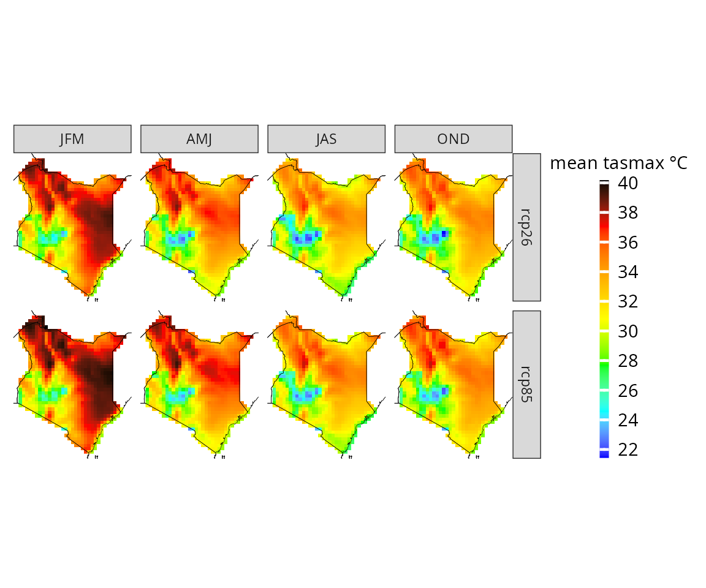
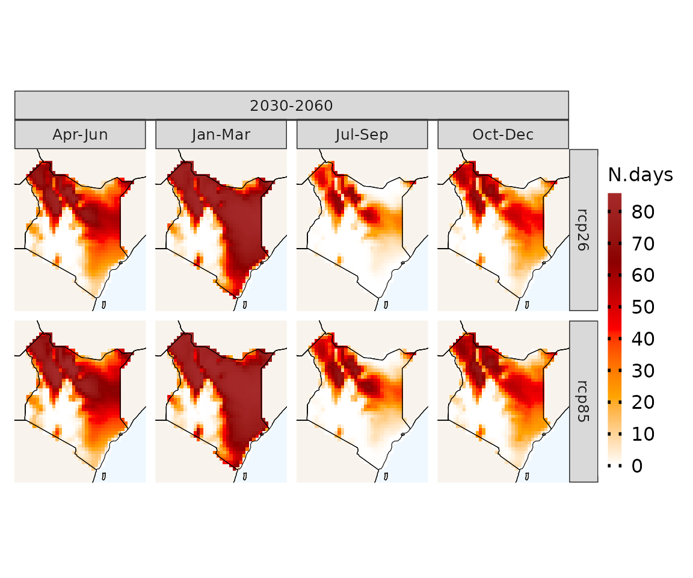

The power of patchwork with CAVAanalytics
more_advanced.RmdIn the getting started article, we have already explored some of the fundamental features of CAVAanalytics. Now, let’s take our understanding to the next level as we delve into the full potential of CAVAanalytics, especially when synergized with the powerful library patchwork for crafting stunning plots. So, without further ado, let’s dive right in by loading the data.
# to download a specific area, set country=NULL and specify xlim and ylim arguments.
kenya_exmp <- load_data(path.to.data = "CORDEX-CORE", country = "Kenya", variable = "tasmax",
years.proj = 2030:2060, years.hist = NULL, domain = "AFR-22")Composite seasonal plot
# Here we use map from purrr to create seasonal plots for projections. Remember that the output of plotting is a ggplot object, hence you can add anything to it or change the scale, theme, etc
sns_proj <- purrr::map(list(1:3, 4:6, 7:9, 10:12), ~ projections(kenya_exmp, season = .x) %>%
plotting(., plot_titles = "mean tasmax °C", ensemble = T, legend_range = c(20, 40))+
ggtitle(paste0("Season ", glue::glue_collapse(.x, "-")))+ # add title
theme(plot.title = element_text(hjust = 0.5))) # center title
wrap_plots(sns_proj)
These plots have the same legends, thus we might want to collect them.
(composite <- wrap_plots(sns_proj)+plot_layout(guides = "collect") & theme(legend.position = 'bottom'))
Now we add the the previous seasonal plot the overall trends
ind.models <- trends(kenya_exmp, season = 1:12, observation = F) %>%
plotting(., plot_titles = "°C/year", spatial_aggr = T, frequencies = F, ensemble=T, palette = c("blue", "red"))+
ggtitle("Season 1-12")+ # add title
theme(plot.title = element_text(hjust = 0.5)) # center title
composite/ind.models In a similar manner, other composite plots can be made, for example to
combine different time frames instead of different seasons.
In a similar manner, other composite plots can be made, for example to
combine different time frames instead of different seasons.